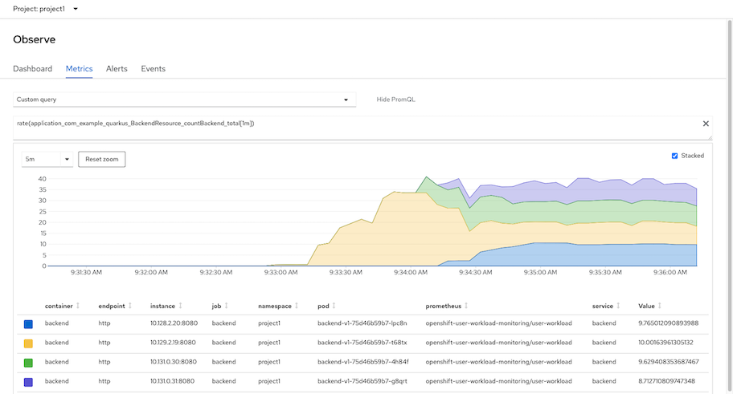

KEDA
Install Operator
install KEDA Operator

create KEDA controller in namesapce keda
oc create -f manifests/keda-controller.yamlVerify controller pod is rum and running.
oc -n keda get podsoutput
NAME READY STATUS RESTARTS AGE keda-metrics-apiserver-d9df8cc9c-h9t7m 1/1 Running 0 1m keda-olm-operator-785f98bc6d-6lvbw 1/1 Running 0 29s keda-operator-75bf78b6fb-kjzzd 1/1 Running 0 1mCPU request and limit for KEDA

Scale by Application Metrics
Prepare Application
- Enable user workload monitoring if your cluster still not enable this feature.
Deploy frontend-v1 and backend-v1 application to namespace project1
oc apply -f manifests/frontend.yaml -n project1 oc apply -f manifests/backend.yaml -n project1 oc set env deployment/frontend-v1 BACKEND_URL=http://backend:8080/ -n project1 oc set env deployment/frontend-v2 BACKEND_URL=http://backend:8080/ -n project1 oc delete deployment frontend-v2 -n project1 oc delete deployment backend-v2 -n project1Create service monitor to monitor backend service
oc apply -f manifests/backend-monitor.yaml -n project1
Configure ScaledObject
Create Service Account app-monitor for KEDA to use for query Thanos
oc create sa app-monitorAdd role cluster-monitoring-view to service account app-monitor
oc adm policy add-cluster-role-to-user cluster-monitoring-view \ -z app-monitor -n project1Let's say we want to scale backend by concurrent request of each pod. Following PromQL will average concurrent request/min for each pod
avg(rate(application_com_example_quarkus_BackendResource_countBackend_total[1m]))Test by generate load to application with 50 concurrent request.
Use K6
oc run load-test -n project1 -i --rm \ --image=loadimpact/k6 --rm=true --restart=Never \ -- run - < manifests/load-test-k6.js \ -e URL=https://$(oc get route frontend -n project1 -o jsonpath='{.spec.host}') \ -e THREADS=50 -e DURATION=5m -e RAMPUP=1s -e RAMPDOWN=0sUse siege CLI
siege -c 50 -t 5m https://$(oc get route frontend -n project1 -o jsonpath='{.spec.host}')Check on Developer console and navigate to Observe -> Metrics -> Custom Query and input following PromQL
avg(rate(application_com_example_quarkus_BackendResource_countBackend_total[1m]))Following graph show average request/min from all backend pods in namesapce project1

Create ScaledObject Review ScaledObject YAML
- scaleTargetRef is configure to monitor deployment object name backend-v1
- Prometheus address is configure to OpenShift's Thanos Querier in namespace openshift-monitoring
- Bearer token for access OpenShift's Thanos Querier stored in secret name keda-prom-creds
- Check for average request/min of backend pods if exceed 10
spec: pollingInterval: 10 cooldownPeriod: 120 minReplicaCount: 1 maxReplicaCount: 20 scaleTargetRef: kind: Deployment name: backend-v1 # Monitor for Deployment named backend-v1 triggers: - type: prometheus metadata: serverAddress: https://thanos-querier.openshift-monitoring.svc.cluster.local:9091 metricName: application_com_example_quarkus_BackendResource_countBackend_total metricType: Value threshold: '10' query: avg(rate(application_com_example_quarkus_BackendResource_countBackend_total[1m])) authModes: "bearer" namespace: project1 authenticationRef: name: keda-prom-credsWe need to configure bearer token and root CA for ScaledObject to access OpenShift's Thanos in namesapce openshift-monitoring.
BEARER_TOKEN=$(oc serviceaccounts get-token app-monitor -n project1|base64) CUSTOM_CA_CERT=$(oc get -n openshift-monitoring secret thanos-querier-tls -o jsonpath="{.data['tls\.crt']}") cat manifests/keda-prometheus-scaledout.yaml| \ sed 's/BEARER_TOKEN/'$BEARER_TOKEN'/'| \ sed 's/CUSTOM_CA_CERT/'$CUSTOM_CA_CERT'/'| \ oc create -n project1 -f -Verify that ScaledObject is ready
oc get -n project1 scaledobject.keda.sh/prometheus-scaledobjectOutput
NAME SCALETARGETKIND SCALETARGETNAME MIN MAX TRIGGERS AUTHENTICATION READY ACTIVE FALLBACK AGE prometheus-scaledobject apps/v1.Deployment backend-v1 1 20 prometheus keda-prom-creds True False False 2m
Test
Create 50 concurrent request to application. KEDA will scale up backend pods when average request/min of pods is exceed 10
Use K6
oc run load-test -n project1 -i --rm \ --image=loadimpact/k6 --rm=true --restart=Never \ -- run - < manifests/load-test-k6.js \ -e URL=https://$(oc get route frontend -n project1 -o jsonpath='{.spec.host}') \ -e THREADS=50 -e DURATION=5m -e RAMPUP=1s -e RAMPDOWN=0sUse siege
siege -c 50 -t 5m https://$(oc get route frontend -n project1 -o jsonpath='{.spec.host}')
Check event from Developer console

check backend pods
watch oc get pods -n project1 -l app=backendOutput
NAME READY STATUS RESTARTS AGE backend-v1-75d46b59b7-4h84f 1/1 Running 0 48s backend-v1-75d46b59b7-g8qrt 1/1 Running 0 33s backend-v1-75d46b59b7-lpc8n 1/1 Running 0 33s backend-v1-75d46b59b7-t68tx 1/1 Running 1 11hKEDA will scale down backend pods when average request/min of pods is below 10 after 2 minutes. This duration is configured by spec.colldownPeriod
spec: pollingInterval: 10 cooldownPeriod: 120 minReplicaCount: 1 maxReplicaCount: 20
check event from Developer console

check that each pod request/min is around 10
